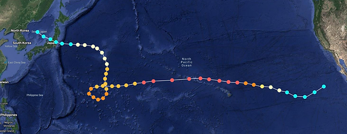

|  |
|---|
| The Track of Hurricane/Typhoon Lingling (05W) according to the Saffir-Simpson Hurricane Wind Scale. The dots plot the location of the storm at 6-hour intervals. |
RSE-029 was a tropical cyclone that was observed existing in the Pacific Ocean in early to mid-June 2020. The Joint Typhoon Warning Center (JTWC) observed an area of low pressure off the eastern coast of the Korean peninsula on May 30. It organized in structure before being designated the fifth tropical storm of the season on June 1, being assigned the name 'Lingling.' The storm formed abnormally far north for the basin, forming near 40 degrees North. The cyclone moved southeast over Japan, landfalling as a tropical storm with 50 mph winds. The storm intensified steadily into a Category 1 equivalent typhoon before spiking southward. The storm's intensity increased further, reaching Category 4 equivalent wind speeds before beginning a clockwise loop late on June 6. The storm continued eastward, eventually attaining Category 5 winds before crossing the 180th meridian into the Central Pacific basin, and the Central Pacific Hurricane Center (CPHC) began issuing advisories on the now 'Hurricane Lingling.' The storm made a close pass to the Hawaiian islands dumping 13 inches of rain on Kauai, the closest island to the storm at any point. Afterwards the storm began moving south-southeastwards, crossing into the Eastern Pacific basin and the Area of Responsibility for the National Hurricane Center, headquarted in Miami, FL. At this point, the hurricane began weakening in intensity. The storm dissipated on June 16, 2021 about 350 miles off the coast of the Mulegé Municipality in Baja California Sur.
During the storm's close pass to Hawaii, a storm-chaser on Kauai captured a sample of the incredibly low pressure air from the storm. The container of air, now known to be a plastic Rubbermaid tupperware container, was measured to be 841mb (millibars), which is the lowest air pressure observed in any cyclone in recorded history. The sample came from the outer bands of the cyclone, meaning the central pressure may be even lower, potentially into the low 700s or high 600s. This is pending reanalysis from the JTWC and NHC.
The container holding the sample of air was designated as RSE-029-1 and was repossessed by the RSE Foundation in early September 2020.
RSE-029 itself, being a weather event, is no longer able to be contained, and containment would have been impossible even whilst the storm was active. The only remnants of RSE-029 that remain are the sample inside of RSE-029-1, which is kept in a titanium lined room, in a container made of solidified magma.